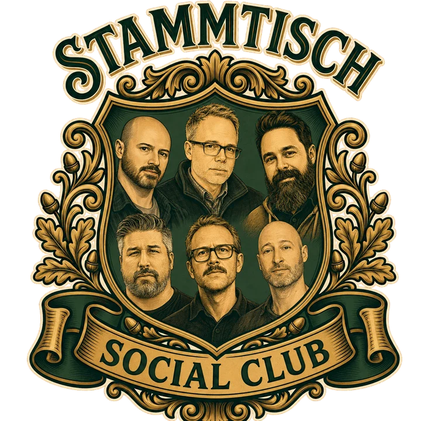

The living record
Club History
A record assembled from what the Club can substantiate. Its past is considered important enough to preserve, but not to improve by invention.
The name
The company had been gathering for some time when one of its number, of Germanic heritage, observed that it was already Stammtisching. The evening on which this was pointed out has escaped the record. The name, on the other hand, has proved easier to retain.

The appointed evening
A tradition that depended on finding a free evening in six calendars was unlikely to meet very often. The Club set aside the third Friday of each month, at eight o’clock Toronto time.
At many gatherings, one or two members take a turn preparing a cocktail. Kingston Windfall and Daq in Black are both in the Annals. The Club has also fielded a Mud Hero team, for which the surviving notes are particularly informative on the subject of shirts.
The Annual Gentlemen’s Assembly
By one recollection, the company was going to the cottage together before the pandemic. The date of the first weekend is not known, nor is the date on which it became the Annual Gentlemen’s Assembly. The cottage had evidently been fit for purpose before it acquired a formal title.
The Club’s observances
The December gathering is known as Christisch. The gifts come from the members’ own homes, leaving commerce with a gratifyingly small role in the proceedings. One recollection places an exchange in December 2025. The year of the first Christisch remains uncertain.
In Celebration of Life, each member keeps a list of fifty names. When someone on a member’s list dies, that member speaks at the next Stammtisch about the person and what they gave the world. The standings are kept elsewhere. This part of the evening belongs to the life being remembered.
The company

Contributors to Club History
 Justin
Justin Marc
Marc